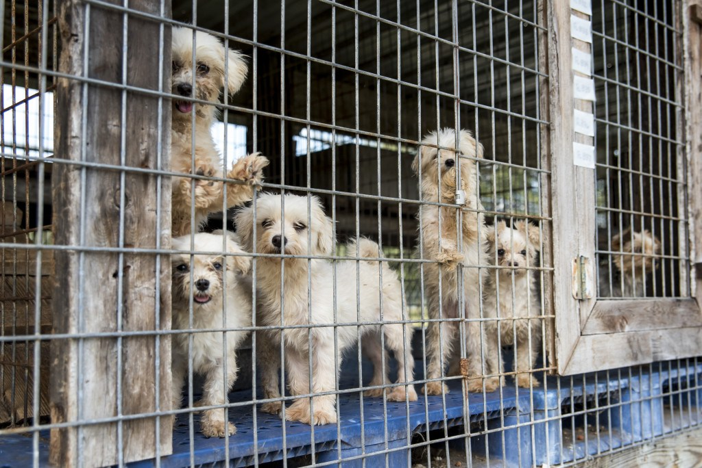

Most of the puppies sold in pet stores come from puppy mills. Purchasing pet store animals means not only supporting the cruel puppy mill industry but also taking a home away from one of the 4 to 5 million unwanted shelter animals killed each year. Because of the inbreeding and filthy conditions common to puppy mills, they often produce animals with serious health problems which typically result in hefty vet fees. On top of this, pet stores generally do not socialize their animals. The puppies may consequently develop behavioral problems which do not make them ideal as pets. Pet shops dispose of unsold animals in, at times, unscrupulous ways.
Puppy mills are factory-style breeding facilities that put profit above the welfare of dogs. Animals from puppy mills are housed in shockingly poor conditions with improper medical care, and are often very sick and behaviorally troubled as a result. The moms of these puppies are kept in cages to be bred over and over for years, without human companionship and with little hope of ever joining a family. And after they're no longer profitable, breeding dogs are simply discarded—either killed, abandoned or sold at auction.
You'll save a life.
Each year, 2.7 million adoptable dogs and cats are euthanized in the United States, simply because too many pets come into shelters and too few people consider adoption when looking for a pet.
The number of euthanized animals could be reduced dramatically if more people adopted pets instead of buying them. When you adopt, you save a loving animal by making them part of your family and open up shelter space for another animal who might desperately need it.
Animal shelters and rescue groups are brimming with happy, healthy pets just waiting for someone to take them home. Most shelter pets wound up there because of a human problem like a move or a divorce, not because the animals did anything wrong. Many are already housetrained and used to living with families.Usually when you adopt a pet, the cost of spay/neuter, first vaccinations (and sometimes even microchipping!) is included in the adoption price, which can save you some of the up front costs of adding a new member to your family. Depending on the animal, you may also save on housebreaking and training expenses.